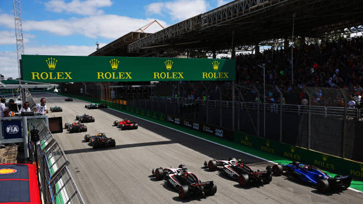
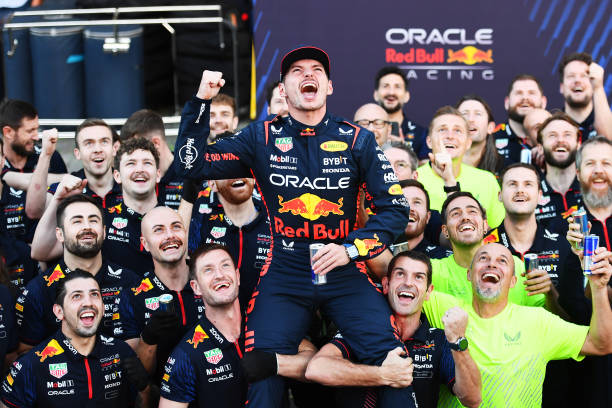
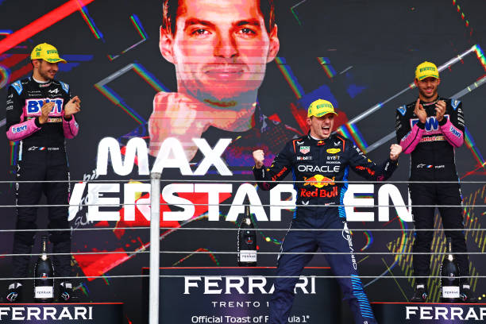
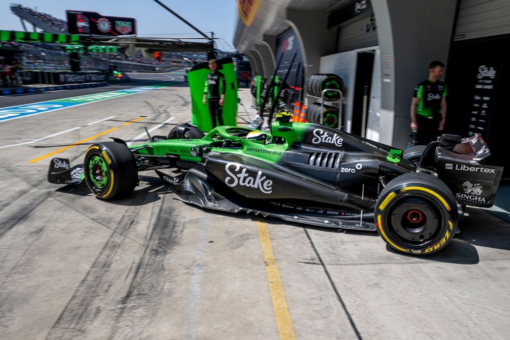
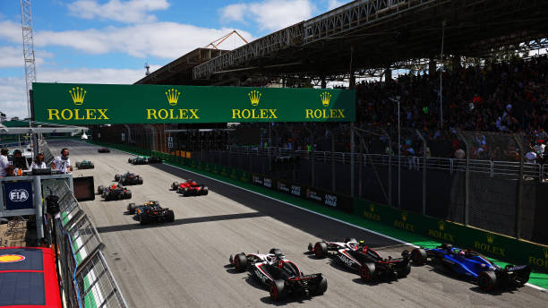
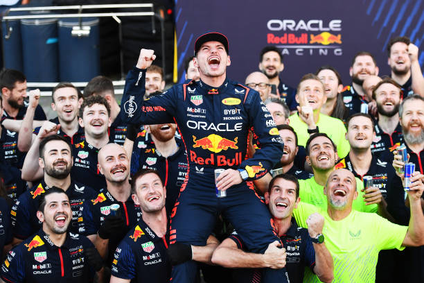
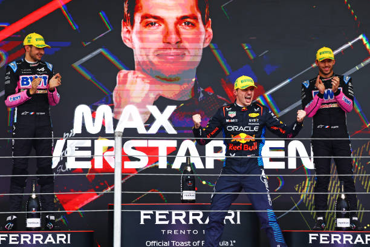
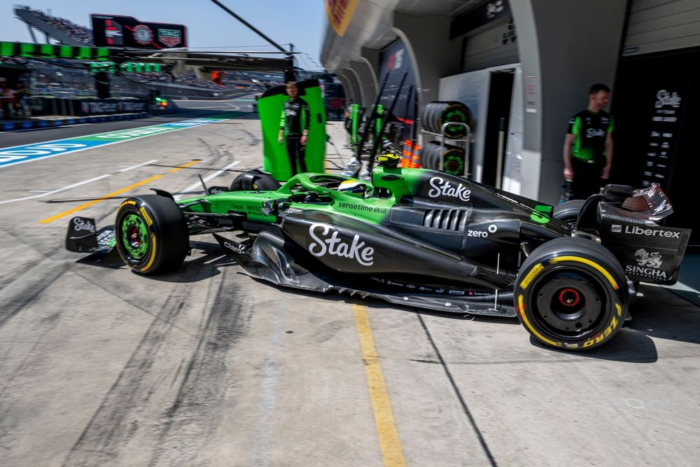

Grande Prêmio de Mônaco
Veja como foi a corrida mais glamourosa do calendário da F1.
Acompanhe as últimas notícias, conheça os pilotos e fique por dentro de tudo sobre a temporada atual.
 







Veja como foi a corrida mais glamourosa do calendário da F1.
Entenda as mudanças e como isso impactará as equipes.
Veja como foi a corrida mais glamourosa do calendário da F1.
Entenda as mudanças e como isso impactará as equipes.
Veja como foi a corrida mais glamourosa do calendário da F1.
Entenda as mudanças e como isso impactará as equipes.
Charles Leclerc (nascido em 1997, em Mônaco) corre pela Ferrari e é considerado uma das maiores promessas da F1. Começou sua trajetória nas categorias de base, se destacando no karting e subindo rapidamente para a GP3, onde foi campeão em 2016. Em 2018, fez sua estreia na F1 com a Sauber (atualmente Alfa Romeo Racing) e, no ano seguinte, foi promovido à Ferrari. Em 2019, Leclerc teve um impacto imediato, vencendo duas corridas e mostrando habilidades excepcionais. Apesar de ainda não ter conquistado o título mundial, Leclerc é uma figura chave na Ferrari e é visto como um dos principais pilotos da nova geração, com grande potencial para brigar por campeonatos no futuro.

Max Verstappen (nascido em 1997, na Bélgica) é piloto da Red Bull Racing e um dos grandes talentos da F1. Filho do ex-piloto Jos Verstappen, Max iniciou sua carreira no karting e, aos 17 anos, fez sua estreia na F1 em 2015 com a Toro Rosso (hoje AlphaTauri), tornando-se o piloto mais jovem da história da categoria. Em 2016, foi promovido à Red Bull Racing e venceu sua primeira corrida no GP da Espanha, aos 18 anos, tornando-se o vencedor mais jovem de uma corrida de F1. Com uma condução agressiva e habilidade técnica impressionante, Verstappen conquistou seu primeiro título mundial em 2021, após uma temporada histórica marcada pela intensa rivalidade com Lewis Hamilton..

Lewis Hamilton (nascido em 1985, em Stevenage, Inglaterra) é amplamente considerado um dos maiores pilotos da história da Fórmula 1. Após se destacar no karting, Hamilton fez sua estreia na F1 em 2007 com a McLaren, quase conquistando o título em seu ano de estreia. Em 2008, conquistou seu primeiro campeonato mundial, tornando-se o campeão mais jovem da história da F1 até então. Em 2013, se transferiu para a Mercedes, onde iniciou uma era de domínio, conquistando 7 títulos mundiais, empatando com Michael Schumacher no recorde de campeonatos. Além de seu sucesso nas pistas, Hamilton é um ativista social e político, conhecido por seu trabalho em prol da igualdade racial, direitos humanos e questões ambientais, sendo uma das figuras mais influentes do esporte fora das pistas.